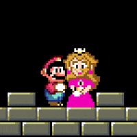
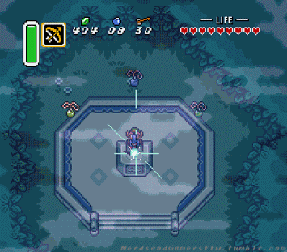
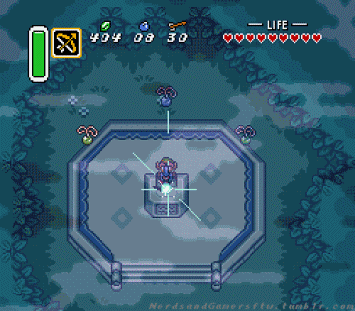
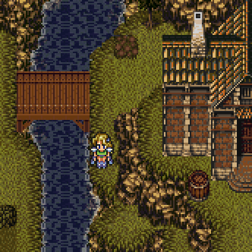
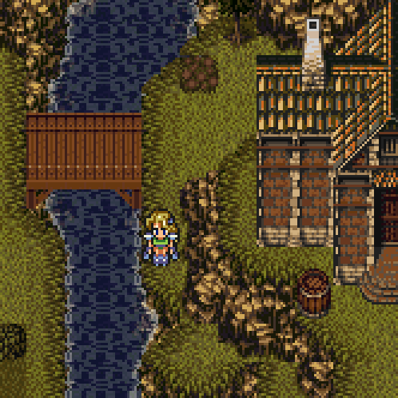
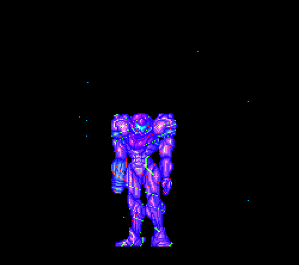
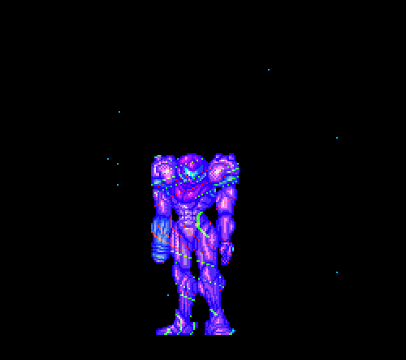

.png)
Sujeito Programador
História
O Super Nintendo é um console da quarta geração dos consoles, que foi lançado em 1990 e foi descontinuado em 2003, vendendo 50 milhões de unidades nesse período. Considerado como criador do console, Masayuki Uemura (1943 - 2021), foi o engenheiro por trás do Super Nintendo. Os avanços tecnológicos que impulsionaram o Super Nintendo (SNES) foram verdadeiramente inovadores. Apresentando gráficos de ponta e recursos de som superiores, o renomado Super Nintendo revolucionou a indústria de jogos com seu console de 16 bits. Para manter sua vantagem competitiva, o sistema incorporou chips de aprimoramento diretamente em suas placas de circuito. A icónica consola de jogos da Nintendo, a SNES, estreou no Japão no final de 1990, seguida do seu lançamento nos EUA em novembro de 1991. Os jogadores europeus tiveram de esperar até 1992 para colocar as mãos nesta adorada consola. Porém, foi somente em 30 de agosto de 1993 que o SNES finalmente chegou ao Brasil. A Playtronic, colaboração entre Gradiente e Estrela, atuou como representante autorizada da Nintendo no Brasil e se encarregou da fabricação do console para o país.
Tecnologia
O console tem um processador Allwinner R16, um módulo de memória RAM DDR3 de 256 MB e 512 MB de armazenamento interno. É exatamente a mesma configuração do NES Mini do ano passado, usando a mesma placa-mãe. Resolução: 512 pixels x 448 pixels; 256 x 224. Paleta de cores: 32 768 (15-bit) Número máximo de cores na tela: 256. Para programar os jogos do nintendinho era usado o Assembly, que é uma linguagem de baixo nível. Pois, as instruções dela eram executadas diretamente pelo processador do hardware. E essa linguagem era intimamente relacionada à arquitetura do processador em que estava sendo utilizada o console de 16 bits da Nintendo, apesar de sua popularidade, é cercado de curiosidades pouco conhecidas, como o seu modelo arcade Nintendo Super System e a ligação de sua criação com a empresa Sega. Na história dos consoles de videogame, a quarta geração (também conhecida como a era dos 16-bits) compreende os consoles lançados entre os anos de 1987 e 1996, dentre os quais destacam-se o Mega Drive, o Neo Geo e o Super Nintendo.
Relevância
Além de divertir milhões de jovens pelo mundo em sua época, o Super Nintendo também influenciou uma geração de Desenvolvedores que cresceram com sua companhia. O console era de longe o mais vendido na década de 90 pelo mundo inteiro, com o seu lançamento mundial sendo no ano de 1990 o console impactou na cultura pop com maestria com seus. Uma das maiores competições do mundo dos jogos foi protagonizada pelo Super Nintendo (SNES) e o Mega Drive da Sega. Esta disputa foi pelos anos 90 e impactou toda uma indústria de jogos e chamou a atenção de muitos jogadores pelo mundo. No final dos anos 80 e começo dos anos 90 a era dos consoles de 8 bits estava terminando, e a Nintendo quanto a Sega estavam preparadas para lançar seus próximos consoles. No ano de 1988, a Sega lançou o Mega Drive no Japão, assim iniciando a era dos consoles de 16 bits. Após dois anos, em 1990, a Nintendo lançou a Super Nintendo (SNES) no Japão. Esses dois consoles deram início a uma competição acirrada. Ambos consoles tinham equipamentos com processadores de 16 bits, provendo gráficos e som melhores em comparação aos consoles anteriores. Porém, cada um apresentava características únicas. A Nintendo tinha clássicos como Super Mario World, The Legend of Zelda: A Link to the Past e Donkey Kong Country, enquanto a Sega oferecia Sonic the Hedgehog, Streets of Rage e Phantasy Star. A Sega iniciou uma campanha intensiva de marketing, alinhando o Mega Drive como um console "cool" e focando sua publicidade para adolescentes. Seu slogan "Genesis does what Nintendon't" tornou-se icônico, enfatizando suas supostas vantagens sobre a Super Nintendo. A Sega lançou o Sega CD, um acessório que permitia executar jogos em CD, enquanto a Nintendo lançou o Super Game Boy, que possibilitava jogar jogos de Game Boy na TV através do SNES. Muitos dos jogos lançados para esses consoles são vistos como clássicos eternos e continuam a ser jogados por muitas pessoas até hoje. A competição entre a Super Nintendo e o Mega Drive superou todos os números de vendas e estatísticas. Foi um confronto pelo domínio de uma época de ouro para os videogames, que gerou uma marca inesquecível na história no ramo.
Principais Jogos

.png)
.png) 

.png) 

 
